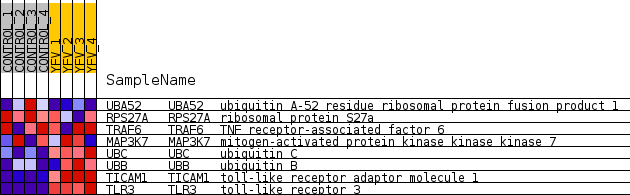
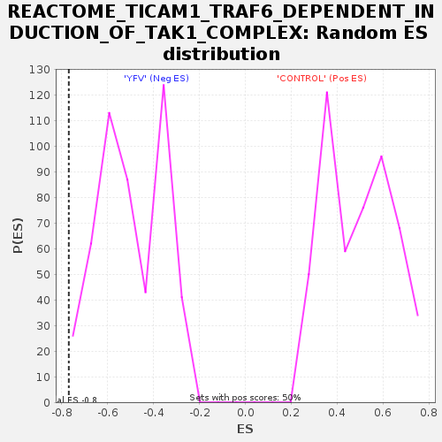

Profile of the Running ES Score & Positions of GeneSet Members on the Rank Ordered List
| Dataset | MATRIZ_GSE99081_collapsed_to_symbols.gsea_CLASE_99081.cls#CONTROL_versus_YFV |
| Phenotype | gsea_CLASE_99081.cls#CONTROL_versus_YFV |
| Upregulated in class | YFV |
| GeneSet | REACTOME_TICAM1_TRAF6_DEPENDENT_INDUCTION_OF_TAK1_COMPLEX |
| Enrichment Score (ES) | -0.76853245 |
| Normalized Enrichment Score (NES) | -1.544054 |
| Nominal p-value | 0.028225806 |
| FDR q-value | 0.10324511 |
| FWER p-Value | 0.989 |
| SYMBOL | TITLE | RANK IN GENE LIST | RANK METRIC SCORE | RUNNING ES | CORE ENRICHMENT | |
|---|---|---|---|---|---|---|
| 1 | UBA52 | ubiquitin A-52 residue ribosomal protein fusion product 1 | 1969 | 0.488 | -0.0467 | No |
| 2 | RPS27A | ribosomal protein S27a | 4134 | 0.232 | -0.1446 | No |
| 3 | TRAF6 | TNF receptor-associated factor 6 | 9581 | -0.007 | -0.4791 | No |
| 4 | MAP3K7 | mitogen-activated protein kinase kinase kinase 7 | 10616 | -0.068 | -0.5323 | No |
| 5 | UBC | ubiquitin C | 14182 | -0.479 | -0.6786 | Yes |
| 6 | UBB | ubiquitin B | 15642 | -0.918 | -0.6282 | Yes |
| 7 | TICAM1 | toll-like receptor adaptor molecule 1 | 15895 | -1.280 | -0.4481 | Yes |
| 8 | TLR3 | toll-like receptor 3 | 16176 | -3.070 | 0.0039 | Yes |

